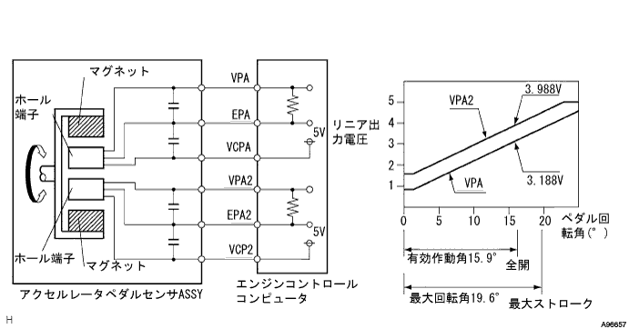
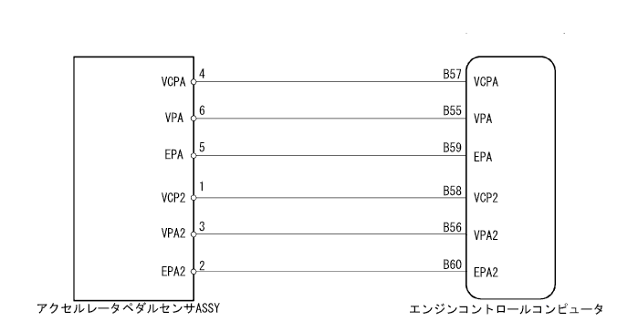
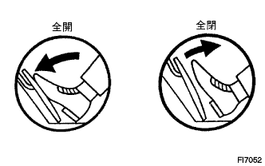
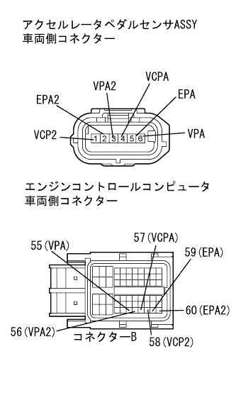
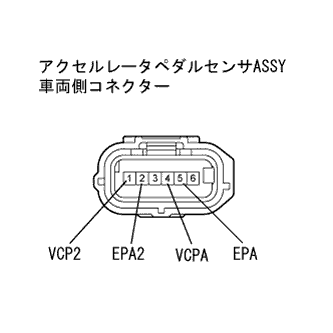

DTC P2120/19 Accelerator Sensor Open Circuit |
DTC P2121/19 Accelerator Sensor Out of Range |
DTC P2122/19 Accelerator Sensor No.1 Open (Low) |
DTC P2123/19 Accelerator Sensor No.1 Open (High) |
DTC P2125/19 Accelerator Sensor No.2 Open |
DTC P2127/19 Accelerator Sensor No.2 Open (Low) |
DTC P2128/19 Accelerator Sensor No.2 Open (High) |
DTC P2138/19 Accelerator Sensor Open Circuit |

| DTCNo. SAE/TCCS | DTC Detection Condition
| Inspection Area |
|---|---|---|
| P2120/19 |
|
|
| P2121/19 |
|
|
| P2122/19 |
|
|
| P2123/19 |
|
|
| P2125/19 |
|
|
| P2127/19 |
|
|
| P2128/19 |
|
|
| P2138/19 |
|
|
| Accelerator sensor No.1 voltage Accelerator pedal fully closed | Accelerator sensor No.1 voltage Accelerator pedal fully open | Accelerator sensor No.2 voltage Accelerator pedal fully closed | Accelerator No.2 sensor voltage Accelerator pedal fully open | Trouble Area |
|---|---|---|---|---|
| 0.5 to 1.1V | 2.6 to 4.5V | 1.2 to 2.0V | 3.4 to 5.0V | System Normal |
| 0V | 0V | 0V | 0V | VCPA or VCP2 circuit open |
| 4.8V or more | 4.8V or more | 4.8V or more | 4.8V or more | EPA or EPA2 circuit open |
| 0V or 5.5V | 0V or 5.5V | 1.2 to 2.0V | 3.4 to 5.0V | VPA circuit open or short |
| 0.5 to 1.1V | 2.6 to 4.5V | 0V or 5.5V | 0V or 5.5V | VPA2 circuit open or short |

| Step 1 | Read TaSCAN Data (Accelerator Sensor No.1 Voltage / Accelerator Sensor No,2 Voltage) |
Connect SST (TaSCAN) to DLC3.
 |
Turn IG ON.
Using SST (TaSCAN), operate according to the screen display and select [ECU Data Monitor].
Read [Accelerator Sensor No.1 Voltage] and [Accelerator Sensor No.2 Voltage] displayed on SST (TaSCAN).
| Pedal Condition | Accelerator sensor No.1 voltage | Accelerator sensor voltage No.2 |
|---|---|---|
| Fully closed | 0.5 to 1.1V | 1.2 to 2.0V |
| Fully open | 2.6 to 4.5V | 3.4 to 5.0V |
| Fully closed → fully open → fully closed | Voltage changes without interruption | Voltage changes without interruption |
|
| ||||
| OK | ||
| ||
| Step 2 | Inspect Wire Harness and Connector (Engine Control Computer - Accelerator Pedal Sensor Assembly) |
Reference |
Disconnect engine control computer connector B and the accelerator pedal sensor assembly connector.
Using SST (Toyota electrical tester), measure the resistance between the terminals. (For Terminals of ECU, see)
| Tester Connection (Terminal Symbol) | Condition | Standard |
|---|---|---|
| B58(VCP2) - 1(VCP2) | Always | Below 1 Ω |
| B60(EPA2) - 2(EPA2) | Always | Below 1 Ω |
| B56(VPA2) - 3(VPA2) | Always | Below 1 Ω |
| B57(VCPA) - 4(VCPA) | Always | Below 1 Ω |
| B59(EPA) - 5(EPA) | Always | Below 1 Ω |
| B55(VPA) - 6(VPA) | Always | Below 1 Ω |
| Tester Connection (Terminal Symbol) | Condition | Standard |
|---|---|---|
| B58 (VCP2) and 1 (VCP2) - other terminals and body ground | Always | 10k Ω or higher |
| B60 (EPA2) and 2 (EPA2) - other terminals and body ground | Always | 10k Ω or higher |
| B56 (VPA2) and 3 (VPA2) - other terminals and body ground | Always | 10k Ω or higher |
| B57 (VCPA) and 4 (VCPA) - Other terminals and body ground | Always | 10k Ω or higher |
| B59 (EPA) and 5 (EPA) - Other terminals and body ground | Always | 10k Ω or higher |
| B55 (VPA) and 6 (VPA) - Other terminals and body ground | Always | 10k Ω or higher |
|
| ||||
| OK | |
| Step 3 | Inspect Wire Harness and Connector |
ReferenceConnect engine control computer connector B.
 |
Turn IG ON.
Using SST (Toyota electrical tester), measure the voltage between the terminals.
| Tester Connection (Terminal Symbol) | Condition | Standard |
|---|---|---|
| 4 (VCPA) - Body ground | IG ON | 4.5 to 5.5V |
| 1 (VCP2) - Body ground | IG ON | 4.5 to 5.5V |
Using SST (Toyota electrical tester), measure the resistance between the terminals.
| Tester Connection (Terminal Symbol) | Condition | Standard |
|---|---|---|
| 5 (EPA) - Body ground | Always | Below 1 Ω |
| 2 (EPA2) - Body ground | Always | Below 1 Ω |
|
| ||||
| OK | |
| Step 4 | Replace Accelerator Pedal Sensor Assembly |
Reference| NEXT | |
| Step 5 | Clear DTC |
Turn the IG ON and clear the DTCs following the SST (TaSCAN) screen display. (see)
| NEXT | |
| Step 6 | Check DTC |
Perform a road test.
Turn the IG ON and check the DTCs following the SST (TaSCAN) screen display. (see)
| Result | Proceed to |
|---|---|
| DTCs are displayed | A |
| No DTCs are displayed | B |
|
| ||||
| A | ||
| ||